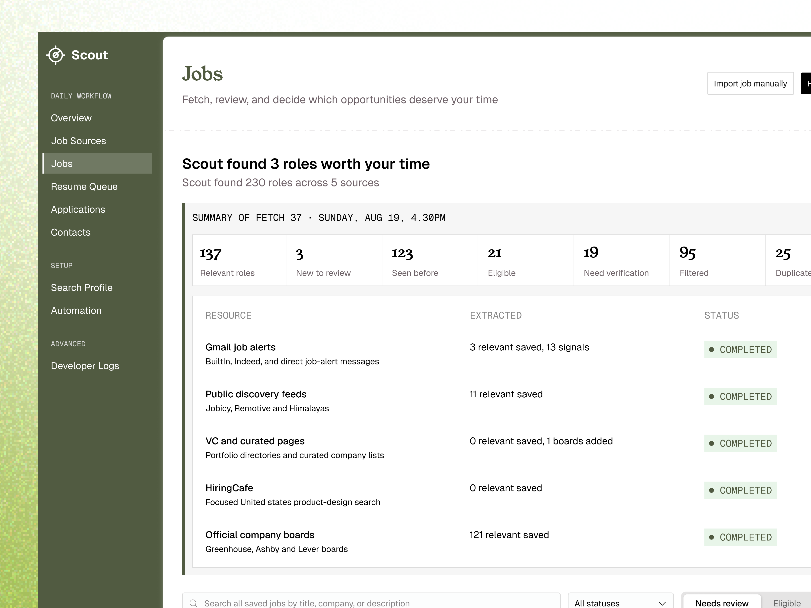
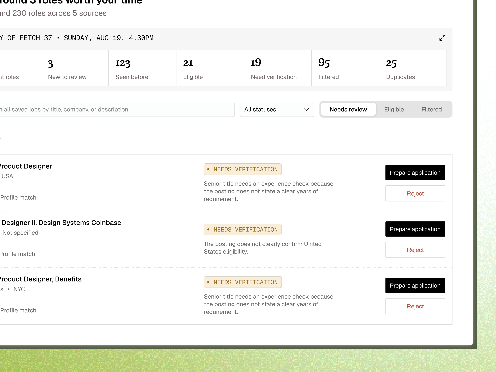
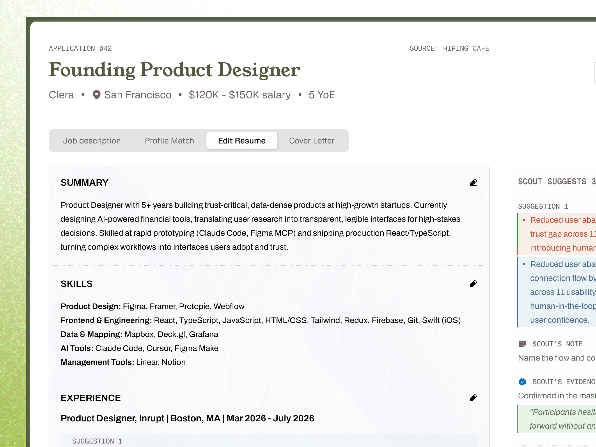
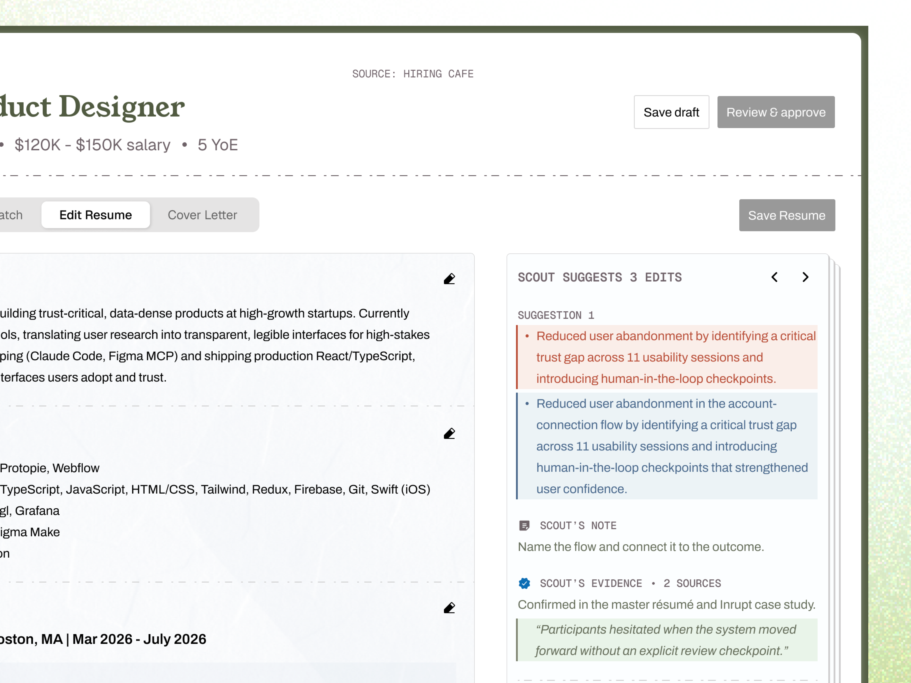
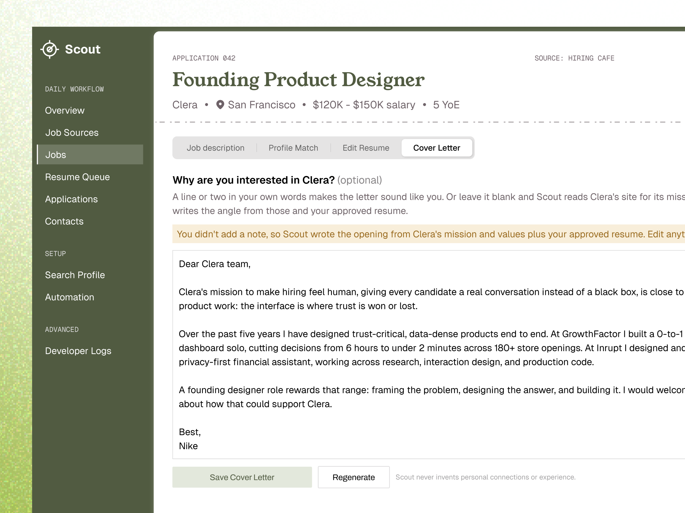

Scout — Work in Progress
From 230 Roles Across 5 Sources to 3 Worth My Time
Scout looks beyond one job board, surfaces roles worth your time, and helps you prepare each application in one place.
RoleSolo Product Designer & Builder
StatusActively Building
ScopeProduct Strategy, UX, Visual Design, Prototype
Problem Statement
Job searching is scattered across job boards, company sites, inbox alerts, resume files, and application trackers. Finding the role is only the beginning; the work required to decide, tailor, and apply is fragmented too.
What I Did
I designed and built a source-directed copilot that searches the resources I choose, identifies roles worth reviewing, and carries the same job context through resume editing and cover-letter generation.
01The Idea
Go Beyond the Traditional LinkedIn Search
Tell Scout where to look, then let it bring the worthwhile opportunities together.
Scout can look through Gmail job alerts, public discovery feeds, curated lists, company career pages, and any other resource I point it toward. It extracts the roles, removes duplicates, checks basic fit and eligibility, and separates the opportunities worth my time from the noise.
From there, the job becomes the centre of the workflow. Scout keeps the role, profile match, resume edits, and cover letter connected instead of making me restart the context in a different tool at every step.
02Sneak Peek
From Finding the Role to Preparing the Application
Five screens from the workflow taking shape.
Image 1 of 5





What Scout does
01 · Discover
Searches the resources you choose and surfaces roles worth your time.
02 · Tailor
Suggests resume edits based on the role and shows the evidence behind them.
03 · Apply
Uses the same job context and approved resume to draft the cover letter.
Still Building
Scout is an active work in progress. I am continuing to connect more sources, tighten the application workflow, and build out the features that take a role from discovery through submission.